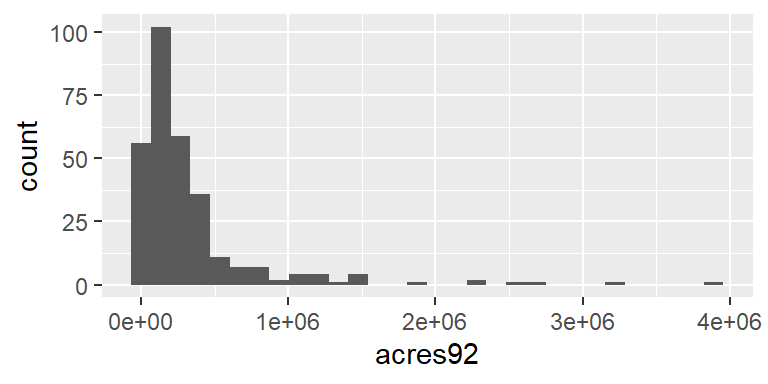
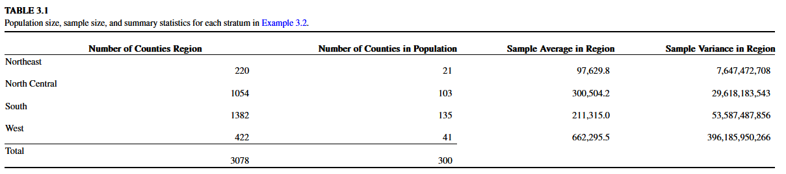
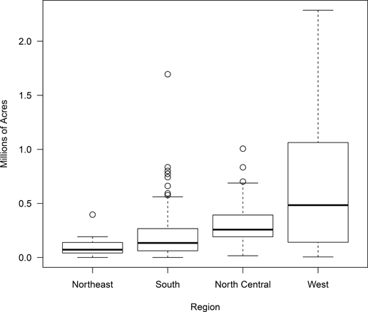

library(ggplot2); library(sampling)Stratified Sampling
A method to use additional information about the population in the survey design.
What is Stratified Sampling (Lohr 3.1)
Motivating Example
Valuating bank assets is a time consuming but critical action needed in the case of a bank failure where the FDIC needs to take over. These assets can be described as 1 of 7 types such as real estate mortgages, commercial loans, and consumer loans.
If we were to take a SRS of all assets from a failed bank to estimate the total dollar amount the FDIC needs to acquire, we could run into a few problems.
- Consumer loans tend to be smaller on average compared to other types, so the variance of the total could be very large, leading to an imprecise estimate
- A SRS won’t guarantee that items from each of the 7 types of asset categories will be sampled. This would result in undercoverage bias.
It is desirable then to create a sampling design that uses information about the population to improve precision and would prevent a bad (heavily biased) estimate.
If the average value of a variable of interest is different for different subpopulations (e.g. average amount of loans in the 7 different types), then we may be able to obtain a more precise estimate by taking a stratified random sample.
Example: Revisiting farmland size
Let’s reconsider the estimate for the average number of acres devoted to farms in 1992. Recall that each row in the dataset represents a county in the United States. In Example 2.6 we took a 10% SRS from the entire population and looked at the distribution of farms92.
agpop <- readr::read_csv(here::here("data", "agpop.csv"))
set.seed(8126834)
N <- nrow(agpop)
index <- srswor(300,N)
agsrs <- getdata(agpop,index)
ggplot(agsrs, aes(x=acres92)) + geom_histogram()
❓ What if this large variance is because counties in the West are physically larger than those in the East? (e.g. LA County is HUGE). The frequency table below confirms that there are many more counties (rows in the data set) from the North Central and Southern compared to from the West or Northeast.
table(agpop$region)
NC NE S W
1054 220 1382 422 Instead of taking a 10% sample from the entire population, let’s stratify by region first, and then take a 10% sample within region. Review Table and Figure 3.1. What do you notice about the sampled proportion within region, and the sample average and variance within regions?


Things to notice:
- West has highest mean, and highest variance
- Distribution of acerage is still skewed right within region
Estimating population parameters
Since a SRS was taken from within each strata, we can use the same equations from SRS to estimate the population parameters for each stratum.
- Overall Total = sum of within strata totals
- Variance of the overall total = sum of variances of totals
Gain from stratification
- Observations within strata are more similar to each other, than they are to the population as a whole
- reduction in variance in individual strata can lead to a reduced variance for the population estimate.
From the Farm example, this ratio was calculated to be 0.75. That means we would only need 0.75*300 = 225 observations from a stratified sample to obtain the same precision as from a SRS of 300.
By sampling within strata, we are “borrowing” information from other similar observations.
closing thoughts
- Don’t have to sample the same % from each strata
- Could see a greater reduction in variance with an increased sampling fraction from the West.
Theory of Stratified Sampling (Lohr 3.2)
Notation
- \(h=1 \ldots H\) strata
- strata membership of every unit in the population
- \(y_{hj}\) value of the \(j\)th unit in strata \(h\)
- \(\sum_{j=1}^{n_{h}}\) sum of all units in strata \(h\)
- \(\sum_{j}\) sum over the units that were sampled from in strata \(h\)
| Measure | Population \((\theta)\) | Sample \((\hat{\theta})\) |
|---|---|---|
| Sample size in strata \(h\) | \(N_{h}\) | \(n_{h}\) |
| Overall sample size | \(N = \sum^{H}_{h=1} N_{h}\) | \(n = \sum^{H}_{h=1} n_{h}\) |
| Total in strata \(h\) | \(\tau_{h} = \sum_{j=1}^{N_{h}} y_{hj}\) | \(\hat{\tau}_{h} = N_{h}\bar{y_h}\) |
| Overall total | \(\tau = \sum_{h=1}^{H} \tau_{h}\) | \(\hat{\tau}_{str} = \sum_{h=1}^{H}N_{h}\bar{y}_{h}\) |
| Mean in strata \(h\) | \(\mu_{h} = \frac{\tau_{h}}{N_{h}}\) | \(\bar{y}_{h} = \frac{1}{n_{h}}\sum_{j} y_{hj}\) |
| Overall mean | \(\mu = \frac{\tau}{N}\) | \(\bar{y}_{str} = \sum_{h=1}^{H} \frac{N_{h}}{N}\bar{y}_{h}\) |
| Variance | \(\sigma_{h}^2 = \frac{1}{N_{h}-1}\sum_{j=1}^{N_{h}}(y_{hj}-\mu_{h})^2\) | \(s_{h}^2 = \frac{1}{n_{h}-1}\sum_{j}(y_{hj}-\bar{y}_{h})^2\) |
| Proportion\(^*\) | \(p = \mu\) | \(\hat{p} = \bar{y}\) |
- \(\bar{y}_{str}\) is a weighted average of the sample stratum means.
Bias and variance of estimators
Both are unbiased estimators \(E[\bar{y}_{str}] = \mu; E[\hat{\tau}_{str}] = \tau\)
Variance of the estimator for the total: \[ \hat{V}\big(\hat{\tau}_{str}\big) = \sum_{h=1}^{H} \Big(1 - \frac{n_{h}}{N_{h}}\Big)N^{2}_{h}\frac{s^{2}_{h}}{n_{h}} \]
Variance of the estimator for the mean \[ \hat{V}\big(\bar{y}_{str}\big) = \frac{1}{N^2}\hat{V}\big(\hat{\tau}_{str}\big) \]
Confidence intervals can be calculated as
\[ \bar{y}_{str} \pm t_{\alpha/2, n-H}\sqrt{\hat{V}\big(\bar{y}_{str}\big)} \]
Example: Estimate the total number of farm acres in 1992 (Table 3.2)
The best way to understand an equation, is to try to use it to calculate a number.
- Import the population data, and the stratified sample that the book authors use.
library(here); library(tidyverse)
agpop <- read_csv(here("data", "agpop.csv"))
agstrat <- read_csv(here("data", "agstrat.csv"))To keep my data frame simple, I am going to create a new data set farm92 that only contains the \(y\) value of interest, acres92, and the stratification variable region.
farm92 <- agstrat %>% select(region, acres92)- Calculate summary statistics for each region
(strata.summary.stats <- farm92 %>%
group_by(region) %>%
summarize(y.bar.h = mean(acres92),
s2.h = var(acres92),
n.h = n()))# A tibble: 4 × 4
region y.bar.h s2.h n.h
<chr> <dbl> <dbl> <int>
1 NC 300504. 29618183543. 103
2 NE 97630. 7647472708. 21
3 S 211315. 53587487856. 135
4 W 662296. 396185950266. 41- Calculate Population region sizes, add this vector to the data frame created above.
(region.size <- agpop %>% group_by(region) %>% tally())# A tibble: 4 × 2
region n
<chr> <int>
1 NC 1054
2 NE 220
3 S 1382
4 W 422strata.summary.stats$N.h <- region.size$n
strata.summary.stats# A tibble: 4 × 5
region y.bar.h s2.h n.h N.h
<chr> <dbl> <dbl> <int> <int>
1 NC 300504. 29618183543. 103 1054
2 NE 97630. 7647472708. 21 220
3 S 211315. 53587487856. 135 1382
4 W 662296. 396185950266. 41 422- Calculate the sample total \(\hat{\tau}_{h} = N_{h}\bar{y_h}\).
strata.summary.stats$tau.hat.h <- strata.summary.stats$y.bar.h * strata.summary.stats$N.h
strata.summary.stats# A tibble: 4 × 6
region y.bar.h s2.h n.h N.h tau.hat.h
<chr> <dbl> <dbl> <int> <int> <dbl>
1 NC 300504. 29618183543. 103 1054 316731380.
2 NE 97630. 7647472708. 21 220 21478558.
3 S 211315. 53587487856. 135 1382 292037391.
4 W 662296. 396185950266. 41 422 279488706.- Calculate the within-strata variance of this total \(\Big(1 - \frac{n_{h}}{N_{h}}\Big)N^{2}_{h}\frac{s^{2}_{h}}{n_{h}}\).
strata.summary.stats <- strata.summary.stats %>%
mutate(var.tau.hat.h =
(1 - n.h/N.h)*(N.h^2)*(s2.h/n.h)
)
strata.summary.stats# A tibble: 4 × 7
region y.bar.h s2.h n.h N.h tau.hat.h var.tau.hat.h
<chr> <dbl> <dbl> <int> <int> <dbl> <dbl>
1 NC 300504. 29618183543. 103 1054 316731380. 2.88e14
2 NE 97630. 7647472708. 21 220 21478558. 1.59e13
3 S 211315. 53587487856. 135 1382 292037391. 6.84e14
4 W 662296. 396185950266. 41 422 279488706. 1.55e15- Calculate the overall total \(\hat{\tau}_{str}\) and variance \(\hat{V}\big(\hat{\tau}_{str}\big)\) by summing these values across the strata.
(tau.hat.str <- sum(strata.summary.stats$tau.hat.h))[1] 909736035(V.tau.hat.str <- sum(strata.summary.stats$var.tau.hat.h))[1] 2.541899e+15The estimated total number of acres devoted to farming is 909,736,035, with standard error 50,417,248. These numbers match those found in Table 3.2.
We can then use these totals to get \(\bar{y}_{str}\) and \(\hat{V}\big(\bar{y}_{str}\big)\)
(y.bar.str <- tau.hat.str / sum(strata.summary.stats$N.h))[1] 295560.8(V.y.bar.str <- V.tau.hat.str / (sum(strata.summary.stats$N.h)^2))[1] 268300231We estimate the average number of acres devoted to farming per county as 295,560.8 with standard error 16,379.87. These numbers match those found in the text below Table 3.2.